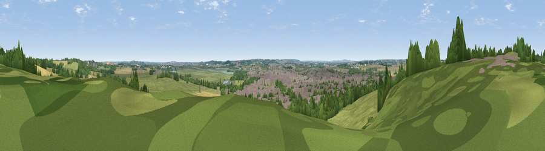

Viewpoint near South Woodham Ferrers
#25774 in England · top 25% of its area beats it · near South Woodham FerrersWhere it is
The exact computed spot (TQ 81325 98525). Click the marker for map links.
The view, rendered

A 360° render of this exact spot computed from the terrain model, tree cover and land cover — summer colours, afternoon light, calibrated against photographs of famous viewpoints. Real trees, hedges and buildings will differ in detail.
The panorama
Grey silhouette: terrain skyline in each direction (720 bearings, Earth curvature and refraction included). Dashed green: skyline with trees (+15 m) and buildings (+8 m) as obstacles. Blue strip: how far the ground is visible on each bearing.
Where the view opens
Wedge length = distance to the farthest visible ground on that bearing (vegetation-aware). Rings at 10, 25 and 50 km.
What fills the view
32% cropland · 32% grassland · 19% woodland · 16% built-up ·
Angular shares of the visible panorama (visual magnitude), not map area. Landscape diversity 0.61 (0–1 Shannon).
Key numbers
More beautiful places nearby
The staircase of upgrades: each row has a higher view potential than everything closer. Driving times are estimates from straight-line distance, calibrated against real road routing — check an actual route before setting out.
| Place | Direction | Drive | Score |
|---|---|---|---|
| Viewpoint near Cold Norton | ENE · 4 km | ~8 min | 47.9 |
| Viewpoint near Cold Norton | ENE · 4 km | ~9 min | 49.4 |
| Stamfords Hill | E · 8 km | ~16 min | 54.1 |
| Viewpoint near South Benfleet | SSW · 12 km | ~23 min | 62.9 |
| Viewpoint near Burham | SSW · 37 km | ~55 min | 63.1 |
| Bluebell Hill | SSW · 37 km | ~56 min | 64.8 |
| Viewpoint near Boxley | S · 39 km | ~58 min | 68.6 |
| Viewpoint near Shipbourne | SSW · 51 km | ~73 min | 69.1 |
51.65626, 0.61998 · source: screening · position refined by local search. Computed location — check access rights before visiting.